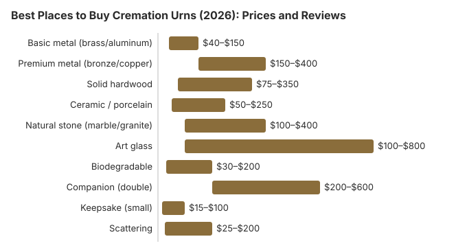

Best Places to Buy Cremation Urns (2026): Prices and Reviews
Choosing a cremation urn is a deeply personal decision, and the options available today are more varied and beautiful than ever. From hand-thrown pottery to biodegradable ocean urns, from elegant hardwood to artisan glass, there is an urn to match every personality, budget, and intention. This guide compares the best places to buy cremation urns in 2026, covering prices, materials, selection, and the shopping experience at each retailer. Whether you are looking for a permanent memorial, a vessel for scattering, or keepsake urns to share among family, we will help you find the right choice.
Cremation Urn Buying Overview
Like caskets, cremation urns are significantly marked up when purchased through a funeral home. A standard adult urn that costs $50 to $150 from an online retailer might be priced at $200 to $500 or more at a funeral home. Since there is no legal requirement to buy an urn from the cremation provider, shopping online or at specialty retailers is one of the easiest ways to save money during the cremation process.
The crematory will return your loved one's remains in a basic temporary container -- typically a plastic bag inside a sturdy plastic or cardboard box. You can take as much time as you need to select a permanent urn, and you can transfer the remains at home whenever you are ready.
Types of Cremation Urns
Standard Adult Urns
Standard urns hold approximately 200 to 220 cubic inches of cremated remains, suitable for an adult who weighed up to about 200 pounds. They come in every material imaginable and are designed for display in the home, placement in a columbarium niche, or burial in a cemetery.
- Metal urns (brass, bronze, copper, aluminum, stainless steel): $40 to $400. Durable, elegant, available in many finishes. Brass is the most popular metal choice.
- Wood urns (oak, cherry, walnut, mahogany, maple, bamboo): $75 to $500. Natural warmth and beauty. Can be engraved or carved for personalization.
- Ceramic and porcelain urns: $50 to $350. Artistic designs, hand-painted options available. More fragile than metal or wood.
- Natural stone urns (marble, granite, onyx): $100 to $600. Substantial, permanent feel. Very durable but heavy.
- Glass and art glass urns: $100 to $800. Stunning handblown or fused glass designs. Each piece is unique. Fragile but extraordinarily beautiful.
Biodegradable Urns
Designed to break down naturally when placed in water or earth, biodegradable urns are the choice for families who want to return their loved one to nature. They are essential for water ceremonies and increasingly popular for green burial.
- Water-soluble urns (salt, sand, plant fiber): $50 to $300. Dissolve in water within minutes to hours. Designed for ocean, lake, or river ceremonies.
- Earth burial biodegradable urns (recycled paper, cornstarch, clay): $30 to $200. Break down in soil over weeks to months.
- Living memorial urns (with tree seed or plant): $80 to $250. Contain a tree seed or plant that grows using the cremated remains as a nutrient base.
Companion Urns
Companion urns, also called double urns, are designed to hold the remains of two people -- typically a married couple. They hold approximately 400 to 450 cubic inches.
- Price range: $200 to $600
- Materials: Same as standard urns -- metal, wood, stone, ceramic
- Considerations: One person's remains are placed first, and the second side remains empty until needed. Some designs have two separate compartments; others have one large chamber.
Keepsake Urns
Keepsake urns are small urns that hold a small portion of cremated remains, allowing multiple family members to each keep a personal memorial. They typically hold 1 to 30 cubic inches.
- Price range: $15 to $100 each
- Styles: Mini versions of full-size urns, pendant necklaces, small vials, heart-shaped containers, small boxes
- Sold in: Individual pieces or sets of 4 to 6
Scattering Urns
Scattering urns are designed specifically for the release of cremated remains at a meaningful location. They feature special openings, tubes, or perforated lids that allow controlled scattering.
- Price range: $25 to $200
- Types: Tube-style with removable cap, box-style with pour opening, biodegradable for water scattering
- Best for: Families who want a dignified, controlled way to scatter ashes at a specific location
Price Comparison by Urn Type and Material
| Urn Type | Online Price | Funeral Home Price | Savings |
|---|---|---|---|
| Basic metal (brass/aluminum) | $40 – $150 | $150 – $400 | 50 – 70% |
| Premium metal (bronze/copper) | $150 – $400 | $300 – $800 | 40 – 60% |
| Solid hardwood | $75 – $350 | $200 – $600 | 40 – 60% |
| Ceramic / porcelain | $50 – $250 | $150 – $500 | 50 – 65% |
| Natural stone (marble/granite) | $100 – $400 | $250 – $800 | 50 – 60% |
| Art glass | $100 – $800 | $200 – $1,200 | 30 – 50% |
| Biodegradable | $30 – $200 | $100 – $400 | 50 – 70% |
| Companion (double) | $200 – $600 | $400 – $1,000 | 40 – 50% |
| Keepsake (small) | $15 – $100 | $50 – $200 | 50 – 70% |
| Scattering | $25 – $200 | $75 – $350 | 40 – 60% |

Urns Northwest -- Best Dedicated Urn Retailer
Urns Northwest is one of the most respected online urn retailers in the United States. Based in the Pacific Northwest, they specialize in handcrafted wooden urns made in their own workshop, along with a curated selection of metal, ceramic, and biodegradable options. Their craftsmanship and customer service set them apart.
What They Offer
- Price range: $50 to $600
- Selection: 200+ models across all urn types
- Specialties: Handcrafted wood urns, engraving and personalization, military and veteran urns
- Shipping: Free shipping on most orders; 2 to 5 business days
- Returns: 30-day returns on unused, un-engraved urns
Pros
- Beautiful handcrafted wood urns made in their own workshop
- Excellent engraving and personalization options
- Knowledgeable, compassionate customer service
- Wide selection covering every urn type and material
- Military and veteran-specific designs
Cons
- Custom and engraved items take longer to ship (5 to 10 days)
- Higher price point than mass-market retailers for comparable items
- Engraved items are not returnable
OneWorld Memorials -- Best Selection and Value
OneWorld Memorials is one of the largest online urn retailers, offering an enormous selection of urns, keepsakes, jewelry, and memorial products. Their scale allows them to offer competitive prices across a wide range of styles and materials.
What They Offer
- Price range: $25 to $800
- Selection: 1,000+ products including urns, keepsakes, jewelry, memorials
- Specialties: Keepsake sets, cremation jewelry, photo urns, themed collections
- Shipping: Free shipping on orders over $49; next-day available
- Returns: 30-day return policy on unused items
Pros
- Largest selection -- over 1,000 memorial products
- Competitive pricing with frequent sales and promotions
- Extensive keepsake and jewelry collection
- Photo and engraving customization available
- Free shipping on orders over $49
Cons
- Quality varies across products -- some items are mass-produced imports
- Website can be overwhelming with so many options
- Customer service response times can be slow during peak periods
Amazon -- Best for Convenience and Reviews
Amazon offers hundreds of cremation urns across every type, material, and price point. The primary advantage is the depth of customer reviews, which can help you evaluate quality before purchasing. Prime shipping ensures fast delivery, and Amazon's A-to-Z guarantee provides buyer protection.
What They Offer
- Price range: $15 to $800+
- Selection: 500+ urn listings
- Shipping: Free with Prime; 1 to 3 day delivery on most items
- Returns: Amazon's standard 30-day return policy
Pros
- Extensive customer reviews with photos
- Fast Prime shipping -- often next-day delivery
- Strong buyer protection through Amazon guarantee
- Easy comparison shopping
- Some of the lowest prices available
Cons
- Quality varies dramatically between sellers
- Some products may not match photos or descriptions
- No specialized urn expertise or customer support
- Generic product descriptions -- limited detail about craftsmanship
Etsy -- Best for Artisan and Custom Urns
Etsy is the premier marketplace for handmade, artisan, and custom cremation urns. If you want something truly unique -- a hand-thrown ceramic urn, a custom wood carving, a hand-blown glass memorial, or an urn shaped like something meaningful to your loved one -- Etsy is where to find it. Artisan urn makers on Etsy create one-of-a-kind pieces that mass retailers simply cannot match.
What They Offer
- Price range: $30 to $1,500+ for custom work
- Selection: Thousands of unique, handmade urns from independent artisans
- Specialties: Custom ceramics, hand-blown glass, carved wood, themed urns, personalized pieces
- Shipping: Varies by seller; typically 3 to 14 days for custom work
- Returns: Varies by seller -- check individual shop policies
Pros
- Truly unique, handmade pieces not available anywhere else
- Direct communication with the artisan who makes your urn
- Extensive customization options -- colors, engravings, themes, shapes
- Support independent artists and craftspeople
- Customer reviews help identify quality sellers
Cons
- Longer lead times for custom work (1 to 4 weeks)
- Quality varies -- vet sellers carefully using reviews and photos
- Higher prices for custom and artisan work
- Return policies vary by seller and custom items may be non-returnable
- Not ideal for urgent needs
Titan Casket Urns -- Best Combined with Casket Purchase
Titan Casket, known primarily as an online casket retailer, also offers a curated collection of cremation urns. Their selection is smaller than dedicated urn retailers, but the quality is consistently good and the prices are competitive, especially if you are already purchasing a casket or casket rental from them.
What They Offer
- Price range: $49 to $399
- Selection: 30 to 50 models covering metal, wood, and biodegradable options
- Shipping: Free shipping; ships separately from caskets
- Returns: Same generous return policy as their caskets
Pros
- Competitive prices with free shipping
- Convenient if purchasing a casket rental and urn together
- Same responsive customer service as their casket business
- Quality-focused selection -- fewer choices but consistent quality
Cons
- Smaller selection than dedicated urn retailers
- Limited personalization and engraving options
- No artisan or custom options
Memorial Store Chains -- Best for In-Person Shopping
For families who prefer to see and touch an urn before purchasing, local memorial stores and cemetery gift shops offer an in-person shopping experience. Chains like The Living Urn, and local monument companies and memorial retailers, maintain physical showrooms with urns on display.
What They Offer
- Price range: $100 to $800 (higher than online due to overhead and markup)
- Selection: 20 to 50 models on display, with catalogs for additional options
- Advantages: See and touch products in person, immediate availability for in-stock items, personal assistance from staff
- Locations: Found in most metropolitan areas; often co-located with monument companies or cemeteries
Pros
- See and handle urns before buying -- assess quality, size, and finish firsthand
- Immediate availability for in-stock items
- Personal assistance and guidance from knowledgeable staff
- Can coordinate with cemetery niche placement
Cons
- Higher prices than online retailers -- typically 30 to 60 percent more
- Limited selection compared to online options
- May not be convenient in all areas
- Potential for upselling in person
How to Choose the Right Cremation Urn
Selecting an urn involves practical considerations as well as personal ones. Here is a framework to guide your decision:
1. Determine the Purpose
- Home display: Choose an urn that complements your home decor and reflects your loved one's personality. Metal, wood, ceramic, and glass urns all work well for display.
- Burial in a cemetery: Check with the cemetery for material and size requirements. Some cemeteries require an urn vault (a protective outer container). Metal and stone urns are most common for burial.
- Columbarium niche: Measure the niche dimensions before purchasing. Standard niche-sized urns are typically 10 to 12 inches tall and 6 to 8 inches wide.
- Scattering: Choose a scattering urn with a controlled-release opening, or a biodegradable urn for water ceremonies.
- Dividing among family: Purchase a combination of one standard urn and multiple keepsake urns.
2. Choose the Right Size
The standard formula is one cubic inch of urn capacity per pound of pre-cremation body weight. Most adult urns hold 200 to 220 cubic inches. If your loved one weighed more than 200 pounds, look for oversized urns (240 to 400 cubic inches).
3. Select the Material
Consider durability, appearance, and intended use. Metal urns are the most durable and versatile. Wood offers natural warmth. Stone is permanent and substantial. Glass and ceramic are beautiful but more fragile. Biodegradable materials are necessary for water or earth return.
4. Consider Personalization
Many urns can be engraved with a name, dates, and a short inscription. Some retailers offer photo urns, custom colors, or hand-painted designs. Personalization adds $20 to $100 to the cost and 3 to 10 business days to delivery.
5. Set a Budget
You can find beautiful, dignified urns at every price point. A $50 brass urn can be just as meaningful as a $500 hand-blown glass piece. The price of the urn does not reflect the depth of your love. For a complete look at cremation costs, see our direct cremation cost guide.
Frequently Asked Questions
How much does a cremation urn cost?
Cremation urns range from $25 for a simple temporary container to $500 or more for handcrafted or premium materials. A standard adult urn suitable for permanent display or burial typically costs $50 to $300 from an online retailer. Funeral homes charge $100 to $500 or more for similar urns due to markup. Companion urns for two people range from $200 to $600. Keepsake urns cost $20 to $100 each.
What size urn do I need for an adult?
The standard guideline is one cubic inch of urn capacity per pound of body weight before cremation. Most adult urns hold 200 to 220 cubic inches, which accommodates individuals who weighed up to approximately 200 pounds. For larger individuals, oversized urns holding 300 to 400 cubic inches are available. If you plan to divide the ashes among keepsake urns, you will need a smaller primary urn plus the keepsakes.
Do I have to buy an urn from the funeral home or crematory?
No. Just like caskets, you are free to purchase an urn from any source. Funeral homes and crematories must accept urns from third-party retailers. Most crematories will provide the cremated remains in a basic temporary container, typically a plastic box or bag inside a cardboard box, at no additional charge. You can then transfer the remains to your chosen urn at home.
What types of cremation urns are available?
The main types include standard urns for display or burial, biodegradable urns designed for water or earth burial, companion urns sized for two people, keepsake urns for sharing small portions of ashes among family members, scattering urns designed for easy release of ashes at a meaningful location, and niche urns sized to fit in columbarium compartments. Materials range from metal and wood to ceramic, glass, stone, and biodegradable materials.
Can I use any container as a cremation urn?
Yes. There is no legal requirement to use a commercially produced urn. Any container that is large enough and secure enough to hold the cremated remains can serve as an urn. Some families use decorative boxes, ceramic vases, handmade pottery, or custom woodworking projects. If you plan to bury the urn, check with the cemetery for any material or size requirements.
Are biodegradable urns required for scattering at sea?
If you are placing the urn in the water rather than scattering loose ashes, a biodegradable urn is recommended and often required by maritime regulations. The EPA requires sea burials of cremated remains to take place at least three nautical miles from shore. Biodegradable urns made from materials like salt, sand, or plant fibers dissolve in water within hours to days, which satisfies environmental regulations and leaves no lasting debris.
Resources That May Help
- Urns NorthwestHandcrafted wooden urns and a wide selection of memorial products
- OneWorld MemorialsLargest online selection of cremation urns, keepsakes, and memorial jewelry
- Direct Cremation Cost GuideUnderstand the full cost of cremation including urn and memorial expenses
- Green Burial OptionsLearn about biodegradable urns and environmentally friendly memorial options
Disclaimer: Information only, not professional advice. Full disclaimer.